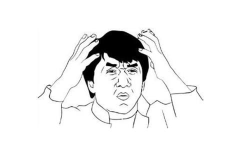
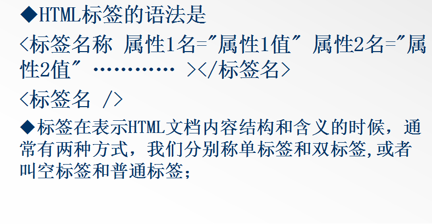

Web
应用教程
应用教程
（珍藏版）
著
Web
应用教程 珍藏版 蒙世裕 著
前言
2014年10月28日，W3C的HTML工作组正式发布了HTML 5的正式推荐标准( W3CRecommendation),这一消息 是W3C在美国圣克拉拉举行的W3C技术大会及顾问委员会会议(TPAC2014)上宣布的。HTML5在这一版本中增加了支持Web应用开发者的许多新特性，以及更符合开发者使用习惯的新元素，并重点关注定义清晰的、一致的准则， 以确保Web应用和内容在不同用户代理(浏览器)中的互操作性。HTML 5是构建开放Web平台的核心。
2015年4月9日，W3C的CSS工作组发布CSS基本用户接口模块( CSS Basic UserInterface Module Level 3，CSS3 UI) 的标准工作草案。该文档描述了CSS 3中对HTML、XML (包括XHTML)进行样式处理所需的与用户界面相关的CSS选择器( selectors)、属性及属性值。它包含并扩展了在CSS Level 2及Selector规范中定义的与用户接口有关的特性。
HTML 5带来了一组新的用户体验，如Web的音频和视频不再需要插件，通过Canvas更灵活地完成图像绘制，而不必考虑屏幕的分辨率，浏览器对可扩展矢量图(SVG)和数学标记语言( MathML)的本地支持，通过引人新的注释信息以增强对东亚文字呈现(Ruby)的支持，对富Web应用信息无障碍新特性的支持，等等。
前端技术将进人一个崭新的时代，至少已经开启了这扇门。
在这种局势下，学习HTML 5无疑成为Web开发者的一大重要任务，谁先学会HTML5,谁就掌握了开启未来Web平台的一把钥匙。因此，笔者希望借助此书帮助国内的Web开发者更好地学习HTML 5以及与之相伴的CSS 3技术，早日运用这些技术开发出一个具有现代水平的、在未来的Web平台上正常运行的Web网站或Web应用程序。
目录
- 第一章 Web 时代的变迁·······················1
- 1.1 迎接新的 Web 时代
- 1.2 HTML5 深受欢迎的理由
- 1.3 可以放心使用 HTML5 的三大理由
- 1.4 HTML5 要解决的三个问题
- 第二章 HTML4 概述·························11
- 2.1 HTML及相关概念介绍
- 2.2 HTML 基本结构
- 2.3 HTML 基础语法
- 2.4 HTML4 常用标签
- 第三章 CSS2 概述····························39
- 2.1 css新建格式
- 2.2 选择器
- 2.3 属性详解
- 2.4 盒模型
- 2.5 定位属性
- 2.6 元素分类
- 2.7 宽高自适应
- 2.8 兼容性问题
- 第四章 javascript 概述···················80
- 2.1 css新建格式
- 2.2 选择器
- 2.3 属性详解
- 2.4 盒模型
- 2.5 定位属性
- 2.6 元素分类
- 2.7 宽高自适应
- 2.8 兼容性问题
1
第一章 Web 时代的变迁
1.1 迎接新的 Web 时代
web的诞生
提到Web，不得不提一个词就是“互联网”。Web是World Wide Web的简称，中文译为万维网。“万维网”和我们经常说的“互联网”是两个联系极其紧密但却不尽相同的概念。今天“互联网”三个字已经承载了太多的内涵，提到互联网，我们通常想到的一种战略思维，或者是一种颠覆传统的商业模式。抛开那些纷繁凌乱的商业化概念，回归技术本身，互联网就是指通过TCP/IP协议族互相连接在一起的计算机网络。而Web是运行在互联网上的一个超大规模的分布式系统。Web设计初衷是一个静态信息资源发布媒介，通过超文本标记语言（HTML）描述信息资源，通过统一资源标识符（URI）定位信息资源，通过超文本转移协议（HTTP）请求信息资源。HTML、URL和HTTP三个规范构成了Web的核心体系结构，是支撑着Web运行的基石。用通俗的一点的话来说，客户端（一般为浏览器）通过URL找到网站(如www.google.com)，发出HTTP请求，服务器收到请求后返回HTML页面。可见，Web是基于TCP/IP协议的，TCP/IP协议把计算机连接在一起，而Web在这个协议族之上，进一步将计算机的信息资源连接在一起，形成我们说的万维网。大家开发的Web应用本质上就是可以提供信息或者功能的Web资源，成为Web这个全球超大规模分布式系统中的一部分。在技术层面进一步理解Web和互联网，建议找一本计算机网络的书去看看，了解一下计算机网络的分层结构和发展历史。
2
1991年8月6日，Tim Berners Lee在alt.hypertext新闻组贴出了一份关于World Wide Web的简单摘要，标志了Web页面在Internet上的首次登场。最早Web主要被一帮科学家们用来共享和传递信息，全世界的Web服务器也就几十台。第一个Web浏览器是Berners Lee在NeXT机器上实现，也只能跑在NeXT机器上，苹果和乔布斯的粉丝对NeXT的历史肯定耳熟能详。真正使得Web开始流行起来的是Mosaic浏览器，这便是曾经大名鼎鼎的Netscape Navigator的前身。Berners Lee在1993年建立了万维网联盟（World Wide Web Consortium，W3C），负责Web相关标准的制定。浏览器的普及和W3C的推动，使得Web上可以访问的资源逐渐丰富起来。这个时候Web的主要功能就是浏览器向服务器请求静态HTML信息。95年的时候马云在美国看到了互联网，更准确的说他其实看到的就是Web，阿里早先做的黄页也就是把企业信息通过进行HTML展示的Web应用。
3
Web 演变史
在WEB发展的今天，总共经历了3个时代，WEB1.0~WEB3.0，每一个时代都有每一个时代的产物，那让我们一起看下WEB的一步步演变吧~
Web 1.0时代
在WEB1.0时代，网站的主要内容就是静态的，由文字和图片组成，制作形式也是也表格为主。当时的用户行为也很简单，就是简单的浏览网页，因为当时有个电脑还是很牛逼的~~ 在那个时候网页三剑客是比较有名的，就靠着这个就能获得不菲的薪资。
Web 2.0时代
到了2005年以后，互联网进入了WEB2.0时代，各种类似桌面软件的WEB应用大量出现。网站的前端也发生了翻天覆地的变化，网页不再单纯的有图片和文字组成了，因为已经满足不了用户的需求了，这时候各种富媒体诞生了，像音频、视频、flash等，可以让网页变得更加生动形象，网页上的交互也给用户带来了很好的体验。这些都是基于前端技术实现的。
Web 3.0时代
随着时间的发展，技术也是日新月异，互联网也迎来了WEB3.0的概念。那WEB3.0时代的到来，意味着网站内的信息可以直接和其他网站相关信息进行交互，也可以通过第三方平台同时对多家网站的进行进行整合使用。用户在互联网上拥有自己的数据，并能在不同网站上使用。举个很简单的，作为前端工程师，大家没事肯定泡GitHub，都有GitHub账号，但
4
是你会发现很多不论是编程网站还是教育网站，我们在登陆的时候都可以使用第三方登陆，使用GitHub一个账号就可以搞定。而且现在浏览器上也可以实现一些复杂的系统功能，不再像之前的两个时代，网站就是简单的展示内容了。
Web 4.0时代
在过去短短的20 多年里，中国的互联网产生了爆炸性的变化，我们从最初的以四大资讯门户网站为主的资讯门户 1.0 时代，到微博、微信、陌陌等以互动社交为核心的 web 2.0时代，再到现在以移动化、融合化为发展方向的 web 3.0，我们仅仅用了20年。
我们的每一个新时代都是从旧时代中孕育而出，在旧时代，通过不断地更新迭代，不断地追求极致，当旧时代的旧硬件、产品、观念无法新需求的时候，互联网就会逐渐进化，衍生出一个新的时代！一个具有统一特征的新时代！
而移动互联网通过近几年的发展，移动互联网已经发展到了巅峰，同时，整个互联网也将突破至web4.0时代。
目前，各大互联网巨头也在为抢占4.0时代而提前做准备，但 web4.0的方向会是什么呢？
这个目前争议还比较多，但普遍认同的一个答案是万物互联——通过互联网串联智能硬件。但此时需要一个类似遥控的终端，控制所有的设备。
综合所有，此终端最大的可能性就是手机。
5
1.2 HTML5 深受欢迎的理由
HTML5 的目标
HTML5的目标是为了能够创建更简单的Web程序，书写出更简洁的HTML代码。例如，为了使Web应用程序的开发变得更容易，提供了很多APII为了使HTML变得更简洁，开发出了新的属性、新的元素，等等。总体来说，为下一代Web平台提供了许许多多新的功能。
首先，在HTML5制作之前，有很多功能必须要使用JavaScript等脚本语言才能实现，譬如前面例子中提到，登录画面中经常使用的让文本框获得光标焦点的功能。如果使用HTML5制作同样的功能只要使用元素的属性标签就可以实现了。这样的话，整个页面就变得非常清楚直观，容易理解。因此，Web设计者可以非常放心大胆地使用这些HTML5中新增的属性标签。由于HTML5中提供了大量的这种可以替代脚本的属性标签，使得开发出来的界面语言也变得更加简洁易懂。
不但如此，HTML5使页面结构也变得清楚明了。之前使用昀div标签也不再使用了，而是使用前面HTML5示例中所提到的更加语义化的结构标签。这样的话，书写出来的界面结构显得非常清晰，各部位要展示什么内容也让人一目了然。
虽然HTML5宣称的立场是。“非革命性的发展”，但是它所带来的功能是让人渴望的，使用它所进行的设计也是很简单的，因此，它深受Web设计者与Web开发者的欢迎。
世界知名浏览器厂商对HTML5的支持
HTML5被说成是划时代也好，具有革命性也好，如果不能被业界承认并且大面积地推广使用，这些都是没有意义的。
6
事实上，今后HTML5被正式地、大规模地投入应用的可能性是相当高的.通过对Intcrnet Explorc、Googlc、Fircfox、Safari、Opcra等主要的Wcb浏览器的发展策略的调查，发现它们都在支持HTML5上采取了措施。
微软：2010年3月16日，微软于拉斯维加斯市举行的MIXIO技术大会上宣布已推出IE9浏览嚣开发者预览版。微软称，IE9完成开发后，将更多支持CSS 3、SVG和HTML5等互联网浏览通用标准。
Google: 2010年2月19日，谷歌Gears项目经理伊安费特通过博客宣布，谷歌将放弃对Gears浏览器插件项目的支持，以此重点开发HTML5项目。据费特表示，目前，在谷歌看来，Gears面临的主要问题是，该应用与HTML5的诸多创新非常相似，而且谷歌一直积极发展HTML5项目。因此，只要谷歌不断以加强新网络标准的应用功能为工作重点，那么为Gears增加新功能就无太大意义了。目前，多种浏览器将会越来越多地为GMail及其他服务提供更多脱机功能方面的支持，因此Gears面临的需求也在日益下降，这是谷歌做出上述调整的重要原因。
苹果：2010年6月7日，苹果在开发者大会的会后发布了Safari5，这款浏览器支持10个以上的HTML5制作新技术，包括全屏幕播放、HTML5视频、HTML5地理位置、HTML5切片元素、HTML5的可拖动属性、HTML5的形式验证、HTML5的Ruby、HTML5的AJAX历史和WebSocket字幕。
Opera: 2010年5月5日，Opera软件公司首席技术官Hakon Wium Lie先生在访华之际，接受了中国软件资讯网等少数几家媒体的采访。号称“CSS之父”的Hakon Wium Lie认
7
为,HTML 5与CSS 3将是全球互联网发展的未来趋势，目前包括Opera在内的诸多浏览器厂商，纷纷在HTML5研发相关产品，Web的未来属于HTML5。
Mozilla: 2010年7月，Mozilla基金会发布了即将推出的Firefox 4/111览器的第一个早期测试版。在该版本中的Firefox浏览器中进行了大幅改进，包括新的HTML5语法分析器，似及支持更多HTML5形式的控制等。从官方文档来看，Firefox 4对HTML5是完全级别的支持。目前包括在线视频、在线音频等多种应用都已在该版中实现。
以上证据表明，目前这些溯览器都纷纷地朝着支持HTML5、结合HTML5的方向迈进着，因此HTML5制作已经被广泛地推行开来了。
8
1.3 可以放心使用 HTML5 的三大理由
web开发者最担心的就是新技术推出时由于其不成熟所产生的问题。如果能够实现互联网通用标准，可以避免各浏览器之间的不统一。这一点已经被明确了，但是在朝着这方面前进过程中会不会出现什么周折是令人担心的。
虽然web开发者普遍认为有了html5是比较好的，但是还是会很担心诸如“可不可以做到不老版本浏览器的兼容”，“会不会产生错误”等各种问题。但是可以很高兴地告诉你，请放心，html5就像以前css刚开始普及时一样，不会存在什么问题。
有三个理由证明可以放心的使用html5:
1.兼容性：html5在老版本的浏览器上也可以正常运行（兼容性问题。虽然到了html5时代，但并不表现在用html4创建出来的网站必须全部要重建，只会要求各web浏览器今后能正常运行用html5开发出来的功能。“非革命性的发展”这一点正是通过兼容性体现出来的。正是因为保障了兼容性才能让人毫不犹豫地用html5来开发网站）
2.实用性：html5内部并没有封装什么很复杂的，不切实际的功能，而只是封装了简单实用的功能。
3.非革命性的发展：html5的内部功能不是革命性的，只是发展性的。
以上三点就是所谓的“html设计原则”html5也是以该原则为基本原则而开发出来的，各主流浏览器使用html5的前提也就是要求html5能够符合这些原则，今后也将以其为前提来支持html5.
9
1.4 HTML5 要解决的三个问题
HTML 5的出现，对于Web来说意义是非常重大的。因为它的意图是想要把目前Web上存在的各种问题一并解决掉，它是一个企图心比较强的HTML版本。那么，到底Web上存在哪些问题，HTML 5又打算怎么解决呢？
Web浏览器之间的兼容性很低。
首先要提到的就是，Web浏览器之间的兼容性是非常低的。在某个Web浏览器上可以正常运行的HTML/CSS/JavaScript等Web程序，在另一个Web浏览器上就不正常了的事情是非常多的。
如果用一句话来描述这个问题的原因，可以说是“规范不统一”。规范不统一，没有被标准化，是这个问题的主要原因。
在HTML 5中，这个问题将得到解决。HTML 5的使命是详细分析各Web浏览器所具有的功能，然后以此为基础，要求这些浏览器所有内部功能都要符合一个通用标准。
如果各浏览器都符合通用标准，然后以该标准为基础来书写程序，那么程序在各浏览器都能正常运行的可能性就大大提高了，这对于Web开发者和Web设计者都是一件令人可喜的事
10
情。而且，今后开发者开发出来的Web功能只要符合通用标准，Web浏览器也都是很愿意封装该功能的。
文档结构不够明确。
第二个问题是，在之前的HTML版本中，文档的结构不够清晰、明确。例如，为了要表示“标题”，“正文”，之前一般都是用" div "元素。但是，严格说来，" div "不是一个能把文档结构表达得很清楚的元素，使用了过多的" div "要素的文章，阅读时不仔细研究，是很难看出文档结构的。而且，对于搜索引擎或屏幕阅读器等程序来说，过多使用了div元素，那么这些程序就连“从哪到哪算是重要的正文”，“这个" ul "要素是表示导航菜单，还是表示项目列表”等对于结构分析来说最基本的问题的答案也都不知道。
在HTML 5中，为了解决这个问题，追加了很多跟结构相关的元素。不仅如此，还结合了包括微格式、无障碍应用在内的各种各样的周边技术。
Web应用程序的功能受到了限制。
最后一个问题是，HTML与Web应用程序的关系十分薄弱。Web应用程序的特征是先从网络下载，然后忠实运行，因此应该对会威胁到用户安全的功能进行限制。
目前安全性的保障这方面已做到了，但对于Web应用程序来说，一直以来HTML真正所做出的贡献是很少的，譬如说就连上传文件时想同时选择一个以上的文件都做不到。
为了弥补这方面的不足，HTML 5已经开始提供各种各样Web应用上的新API，各浏览器也在快速地封装着这些API，HTML 5已经使富Web应用的实现变成了可能。
11
第二章 HTML4 概述
2.1 HTML及相关概念介绍
由来
万维网（英语：World Wide Web Consortium，简称W3C）上的一个超媒体文档称之为一个页面（外语：page）。作为一个组织或者个人在万维网上放置开始点的页面称为主页（外语：Homepage）或首页，主页中通常包括有指向其他相关页面或其他节点的指针（超级链接），所谓超级链接，就是一种统一资源定位器（Uniform Resource Locator，外语缩写：URL）指针，通过激活（点击）它，可使浏览器方便地获取新的网页。这也是HTML获得广泛应用的最重要的原因之一。在逻辑上将视为一个整体的一系列页面的有机集合称为网站（Website或Site）。超级文本标记语言（英文缩写：HTML）是为“网页创建和其它可在网页浏览器中看到的信息”设计的一种标记语言。
网页的本质就是超级文本标记语言，通过结合使用其他的Web技术（如：脚本语言、公共网关接口、组件等），可以创造出功能强大的网页。因而，超级文本标记语言是万维网（Web）编程的基础，也就是说万维网是建立在超文本基础之上的。超级文本标记语言之所以称为超文本标记语言，是因为文本中包含了所谓“超级链接”点。
定义
超级文本标记语言是标准通用标记语言下的一个应用，也是一种规范，一种标准，它通过标记符号来标记要显示的网页
12
中的各个部分。网页文件本身是一种文本文件，通过在文本文件中添加标记符，可以告诉浏览器如何显示其中的内容（如：文字如何处理，画面如何安排，图片如何显示等）。浏览器按顺序阅读网页文件，然后根据标记符解释和显示其标记的内容，对书写出错的标记将不指出其错误，且不停止其解释执行过程，编制者只能通过显示效果来分析出错原因和出错部位。但需要注意的是，对于不同的浏览器，对同一标记符可能会有不完全相同的解释，因而可能会有不同的显示效果。
语言特点
超级文本标记语言文档制作不是很复杂，但功能强大，支持不同数据格式的文件镶入，这也是万维网（WWW）盛行的原因之一，其主要特点如下：
一、 简易性：超级文本标记语言版本升级采用超集方式，从而更加灵活方便。
二、 可扩展性：超级文本标记语言的广泛应用带来了加强功能，增加标识符等要求，超级文本标记语言采取子类元素的方式，为系统扩展带来保证。
三、 平台无关性：虽然个人计算机大行其道，但使用MAC等其他机器的大有人在，超级文本标记语言可以使用在广泛的平台上，这也是万维网（WWW）盛行的另一个原因。
四、 通用性：另外，HTML是网络的通用语言,一种简单、通用的全置标记语言。它允许网页制作人建立文本与图片相结合的复杂页面，这些页面可以被网上任何其他人浏览到，无论使用的是什么类型的电脑或浏览器。
13
认识网页
以淘宝首页，爱奇艺首页为例认识网页
14
网页主要由文字、图片和按钮等元素构成。当然，除了这些元素，网页中还可以包含音频、视频以及Flash等。
网页组成
网页由内容 、结构、表现、行为这四个部分组成。
内容：网页要传达的信息我们叫做内容部分。
结构：网页的结构部分（如：头部、身体部分、结尾部分）。
表现：是网页样式 （每个网页设计的都是不一样的）。
行为：网页能够实现交互功能（如：轮播图、滑动效果、用户与页面的交互）。
HTML 文档结构
HTML页面是由标签和属性构成，一起用于标识各个文档部件，一个HTML文档包含两部分内容:对这个文件简单描述区(head)和文档本身(body)的内容区。
HTML文档具有以下特点:
1. 结构化
2. 与平台无关
3. 简单，易维护
15
开发工具
调试工具
16
2.2 HTML 基本结构
基本结构
17
2.3 HTML 基础语法

18
2.4 HTML4 常用标签
文本标题
总结：h1最大，h6最小，字体加粗，前后隔行。
21
注释符
列表
1. 无序列表
1. 有序列表
1. 自定义列表
22

24
25
图片
26
相对路径
27

表格
28
30

练习2
32
表单框
PS:Get 方式传输的数据量非常小，一般限制在 2 KB 左右，但是执行效率却比 Post 方法好；而 Post 方式传递的数据量相对较大，它是等待服务器来读取数据，Get 方式提交数据，会带来安全问题，出于安全性考虑，建议最好使用 Post 提交数据。
33
表单控件
34
PS:（button和submit的区别是 ，submit是提交按钮 起到提交信息的作用，button只起到跳转的作用，不进行提交。）
35
37
滚动标签
38

综合练习